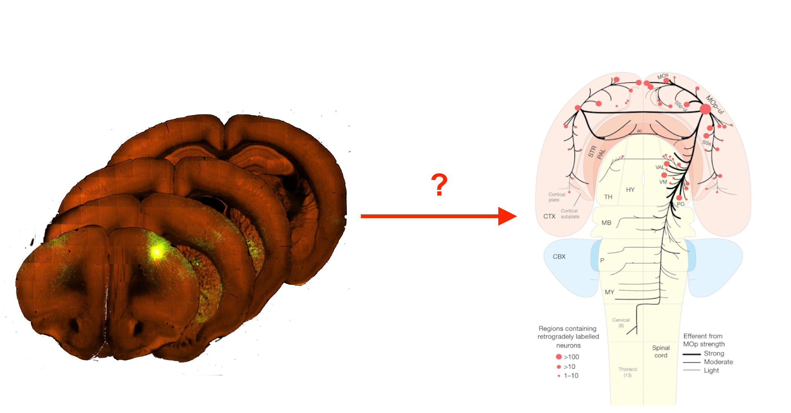
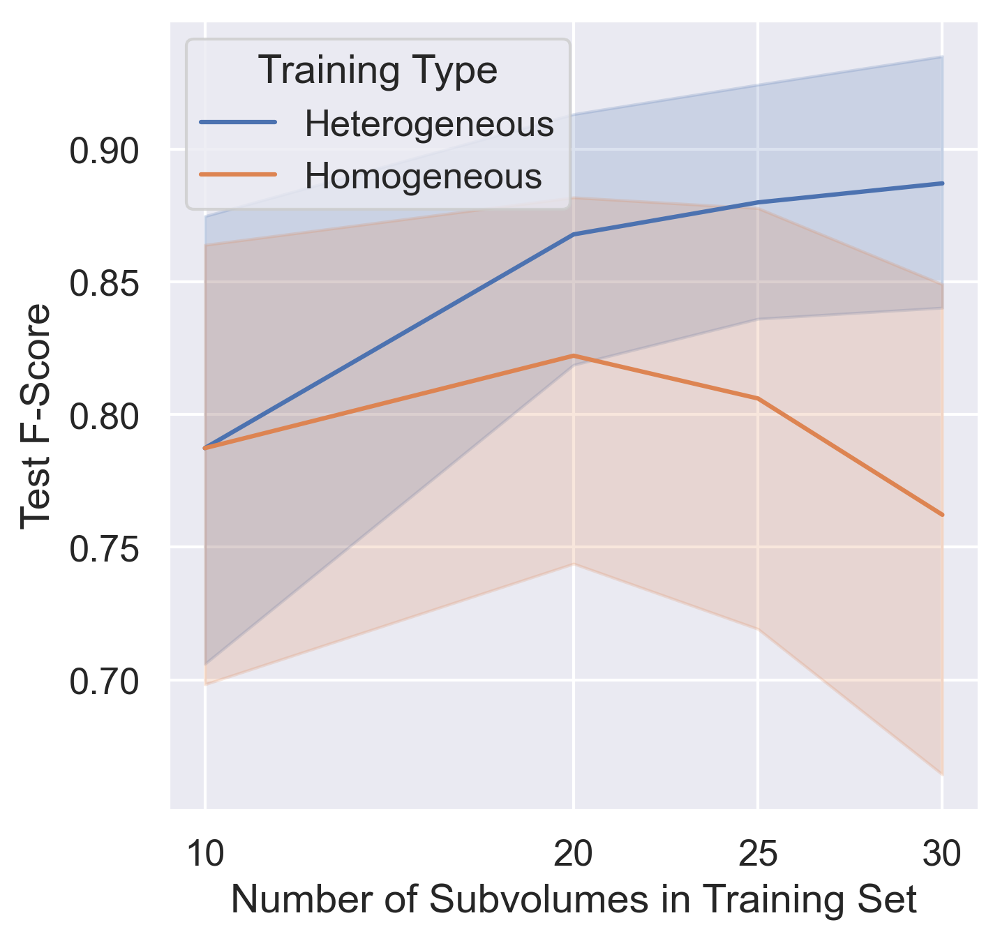
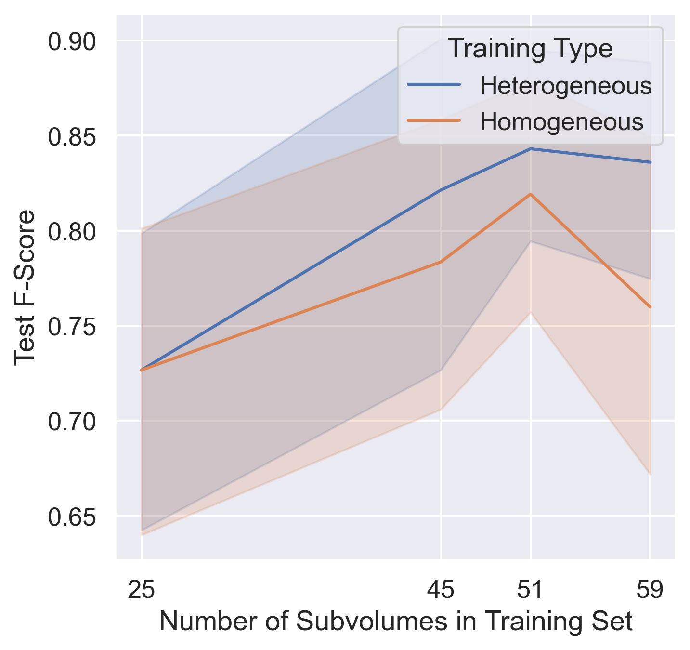

class:inverse ### BrainLine: An Open Pipeline for Connectivity Analysis of Whole-Brain Fluorescence Volumes NeuroNex 2 Workshop May 23, 2023 Thomas L. Athey <!-- <img src="../images/funding/KNDI.png" STYLE="HEIGHT:95px;"/> --> <br> <!-- .foot[w: <http://neurodata.io/talks/??.html>] --> --- class:inverse ### Mesoscale Connectivity <img src="images/motivation/projects.png" STYLE="width:90%;" class="center"/>  <footer, style="font-size: 12px"> Mitra (2014), Oh et. al. (2014), Foxley et. al. (2021) </footer> --- class:inverse ### Substantial Variability within Image Datasets <img src="images/diversity.png" STYLE="width:100%;" class="center"/> --- class:inverse ### Heterogeneous Training with Ilastik <div class="row"> <div class="column2">  </div> <div class="column2">  </div> </div> --- class:inverse ### BrainLine: Density-Based Connectivity Analysis of Whole-Brain Fluorescence Volumes <img src="images/pipeline.png" STYLE="width:100%;" class="center"/> <footer, style="font-size: 12px"> Athey et. al., bioRxiv (2023) </footer> --- class:inverse ### Demo <img src="images/pipeline-demo.png" STYLE="width:100%;" class="center"/> --- class:inverse ### Thank you!